Note
Click here to download the full example code
Test Waveprop class
Define a BarSingle bar and use it with Waveprop to compute
elastic wave propagation in simple test cases.
# sphinx_gallery_thumbnail_number = 5
import matplotlib.pyplot as plt
import numpy as np
from elwaspatid import Waveprop, BarSingle, trapezeWave
Define material and geometrical parameters
E = 201e9 # Young modulus [Pa]
rho = 7800 # Density [kg/m3]
d = 0.020 # diameter [m]
k = 2.4 # diamters ratio [-]
Define the incident wave vector
incw = np.zeros(80) # incident wave
incw[0:20] = 1e3 # >0 means traction pulse
Create the bars
dx = 0.01 # length of an elementary Segment [m]
n = 50 # number of Segments [-]
D = np.ones(n) * d # diameters of the Segments
bb = BarSingle(dx, D, E, rho) # constant section bar
D2 = np.hstack((np.ones(n)*d, np.ones(n)*d*k)) # section change
b2 = BarSingle(dx, D2, E, rho) # cross-section increase
b3 = BarSingle(dx, D2[::-1], E, rho) # cross-section reduction
# Visualize the bar:
bb.plot() # constant cross-section and constant impedance
b2.plot() # cross-section and impedance increase
- 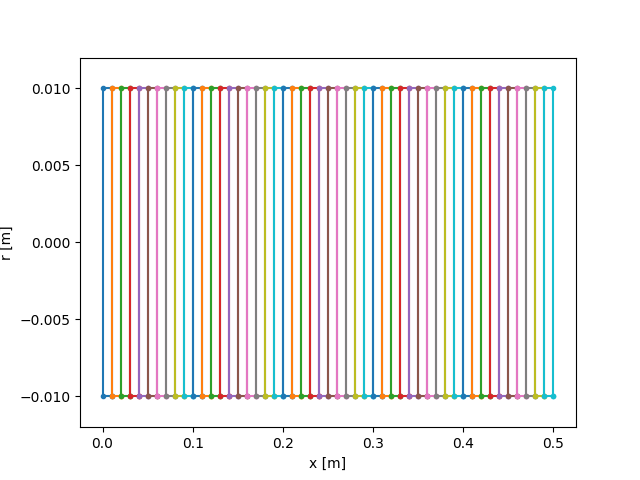

- 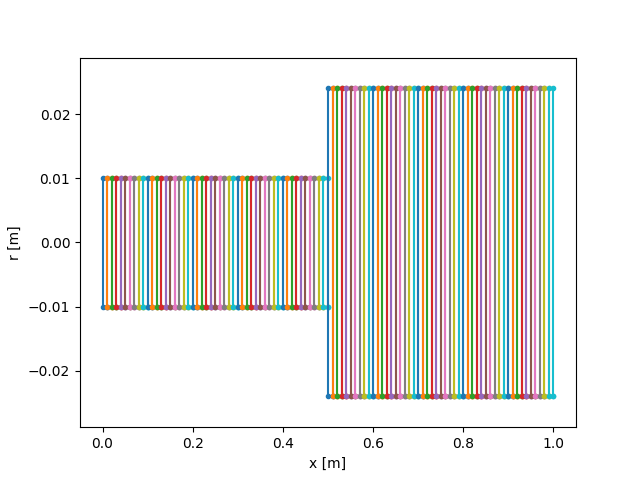

Free-free uniform bar
Incident pulse reflects on both end of the bar endlessly. The force at both ends of the bar is null. Traction reflects as compression. Compression pulse reflects as traction.
test = Waveprop(bb, incw, nstep=2*len(incw), left='free', right='free')
test.plot()
![Force [N]](../_images/sphx_glr_plot_0_Waveprop_005.png)
![Particule velocity [m/s]](../_images/sphx_glr_plot_0_Waveprop_006.png)
It is possible to plot cuts of the space-time diagram, at a given time t or at a given position x
test.plotcut(x=bb.x[int(n/2)])
test.plotcut(t=bb.dt*len(incw)/2)

- 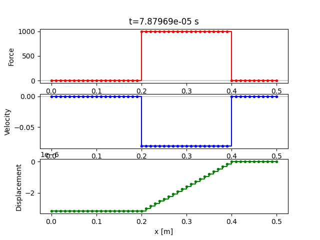
Additional diagrams are also available
test.plot(typ='dir-D') # Wave direction (dir) and Displacement (D)
test.plot(typ='sig-eps') # Stress (sig) and Strain (eps)

![Displacement [m]](../_images/sphx_glr_plot_0_Waveprop_010.png)
![Stress [MPa]](../_images/sphx_glr_plot_0_Waveprop_011.png)
- 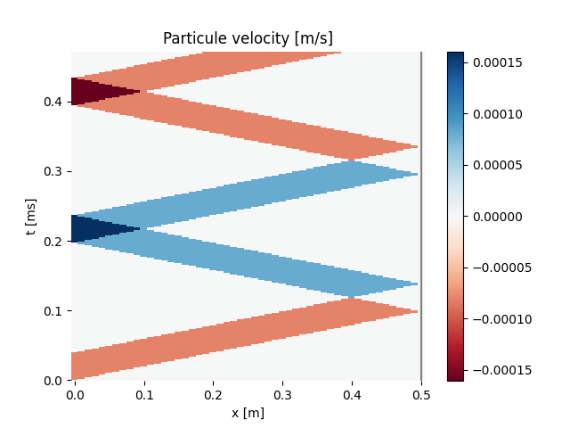
Free-fixed uniform bar
Left end is free, right end is fixed:
compression relfects as compression on fixed end;
then, compression reflects as traction on free end;
and finally traction reflects as traction on fixed end.
Note that velocity and displacement of the right end are null.
test = Waveprop(bb, incw, nstep=3*len(incw), left='free', right='fixed')
test.plot()
test.plot(typ='D') # Displacement (D)
- 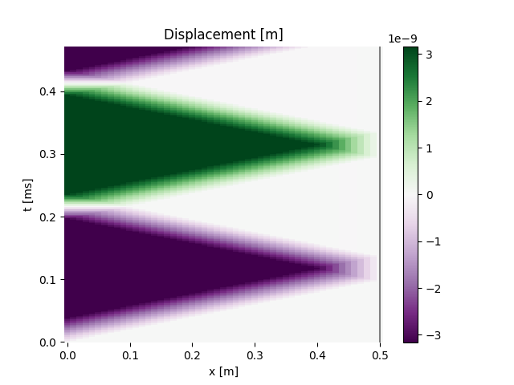
![Particule velocity [m/s]](../_images/sphx_glr_plot_0_Waveprop_014.png)
- 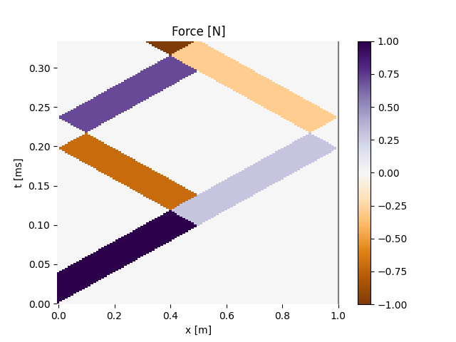
Infinite-infinite uniform bar
Infinite end amounts to anechoic condition: no reflecion of elastic wave.
testf = Waveprop(bb, incw, nstep=100, left='infinite', right='infinite')
testf.plot()
- 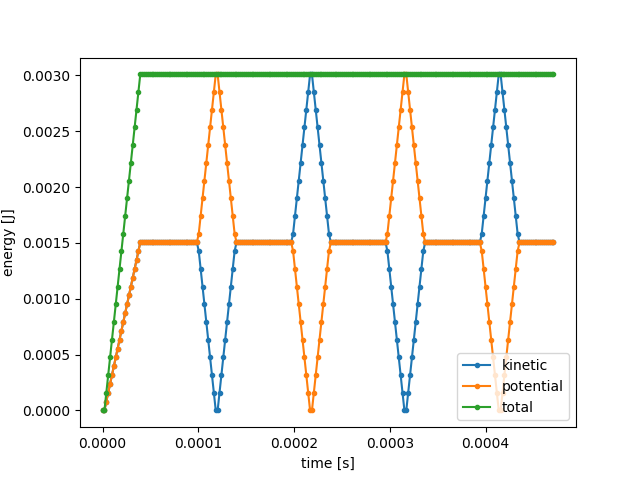
Free-free bar with section increase
The traction pulse reflects as traction on section increase.
testa = Waveprop(b2, incw, nstep=170, left='free', right='free')
testa.plot()
- 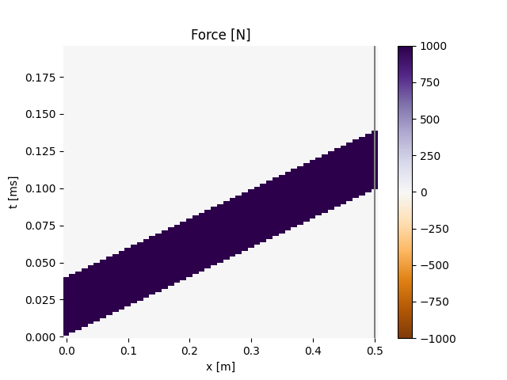
![Particule velocity [m/s]](../_images/sphx_glr_plot_0_Waveprop_019.png)
Free-free bar with section reduction
The traction pulse reflects as compression on the section reduction.
testd = Waveprop(b3, incw, nstep=170, left='free', right='free')
testd.plot()
- 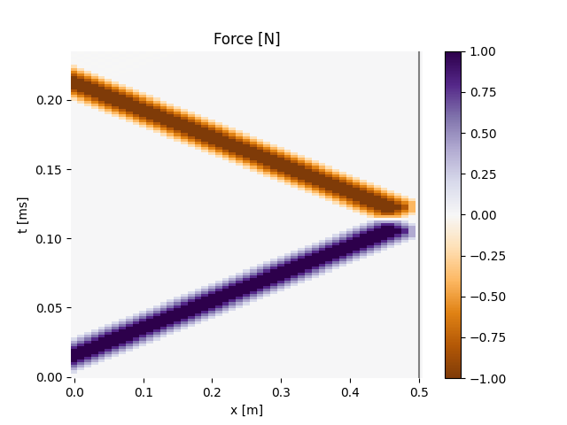
- 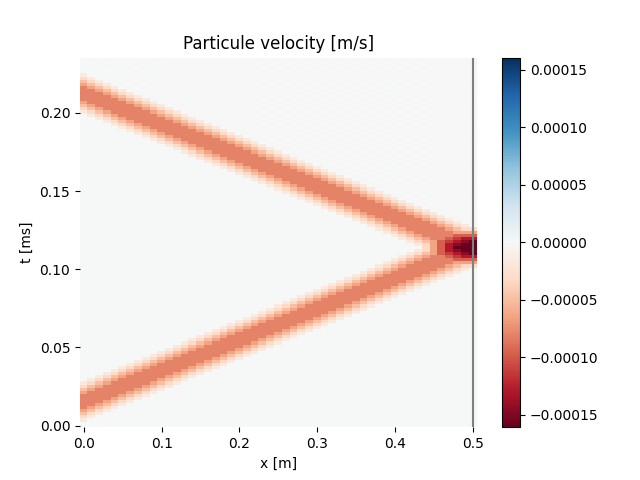
Whatever pulse input is possible
Trapeze
For exemple, define a trapeze pulse shape and propagate it in a bar with
constant section. Right end is free so the traction wave is reflected as
a compression wave. Left end is infinite so no reflecion occur.
trap = trapezeWave(plateau=5, rise=5)
testt = Waveprop(bb, trap, nstep=120, left='infinite', right='free')
testt.plot()
testt.plotcut(x=0.2)
- 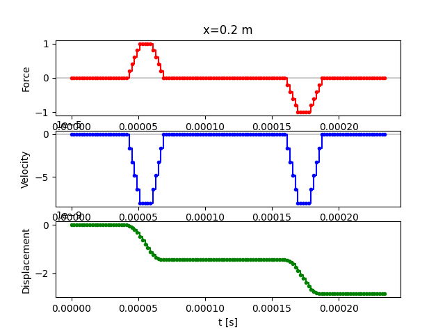
![Particule velocity [m/s]](../_images/sphx_glr_plot_0_Waveprop_023.png)
- 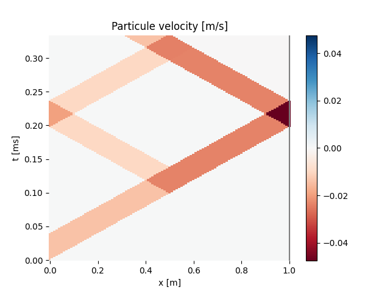
And why not a sine pulse?
sine = np.sin(2*np.pi*np.linspace(0, 1, num=40))
bar = BarSingle(dx, np.ones(30)*d, E, rho)
tests = Waveprop(bar, sine, nstep=3*len(sine), left='infinite', right='free')
tests.plot()
tests.plotcut(x=0.15)
tests.plotcut(x=0.20)
plt.show()
![Force [N]](../_images/sphx_glr_plot_0_Waveprop_025.png)
- 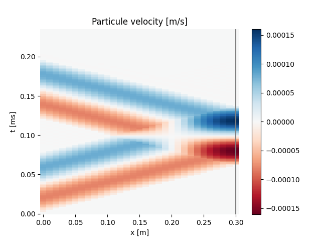


Total running time of the script: ( 0 minutes 9.510 seconds)